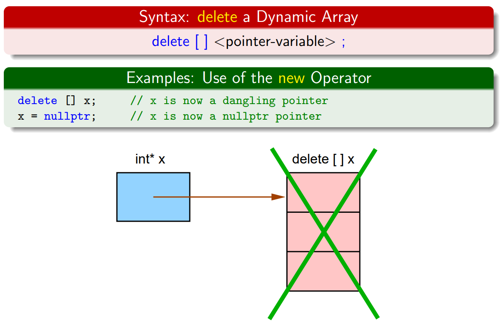

COMP 2012H Honors Object-Oriented Programming and Data Structures
Lab 3 Structures, Pointers & Dynamic Memory Allocation of Arrays
Review
This lab is about structures, pointers and dynamic
memory allocation of arrays.
Structures
A structure is, in general, a collection of heterogeneous objects - different kinds of objects. (c.f. array which is a collection of homogeneous objects.)Pointers
A pointer is a variable that stores the address of another variable. Also, it provides a way to pass large non-primitive data-type objects as arguments to functions. In addition, it is the essentials of dynamic memory allocation. The following shows some pointer operators.| Operator | Functions |
|---|---|
* |
|
& |
|
-> |
|
Dynamic Memory Allocation of Arrays
C++ allows you to create an array of objects - dynamic objects - on-the-fly at runtime. The memory of dynamic objects has to be allocated at runtime explicitly by you using the operator new. The dynamic objects will persist even after the object goes out of scope. Also, they have to be deallocated at runtime explicitly by you using the operator delete. Dynamic objects are managed using a data structure called heap.
The following gives an example (array-ptrs-objects.cpp) demonstrating how to do dynamic memory allocation to create an array of pointers to objects, and all the objects. Also, it demonstrates how to deallocate the objects and array to avoid memory leak.
#include <iostream>
using namespace std;
struct Integer {
int x;
};
int main() {
int n;
cout << "Number of objects: ";
cin >> n;
// Dynamically allocate array of n Integer pointers and then
// dynamiically allocate n Integer objects, both using operator new
cout << "Dynamically allocate memory ..." << endl;
Integer** array = new Integer*[n];
for(int i=0; i<n; ++i) {
array[i] = new Integer;
array[i]->x = i + 1;
}
cout << "Processing ..." << endl;
// Deallocate n Integer objects and then deallocate the array of n
// Integer pointers, both using operator delete
cout << "Deallocate memory ..." << endl;
for(int i=0; i<n; ++i)
delete array[i];
delete [] array;
return 0;
}New Concepts
Stack (Abstract Data Type)

A stack is a "Last In, First Out" (LIFO) data structure that supports the following operations:
- push: Add an element to the top of the stack
- pop: Remove an element from the top of the stack
- peek: Return the element at the top of the stack
- empty: Check whether the stack is currently empty
They are commonly used in algorithms such as depth-first search (DFS) and forms the basis of recursion in many languages including C++ - when you execute a recursive function in C++, C++ maintains a function call stack internally to deal with the recursion. Common implementations of stacks include using a dynamically resizing array and using a linked list. We will be using the former implementation in this lab, with the latter left as an optional task for self-motivated individuals.
Introduction
In this lab, we will model a stack of documents on an office desk using a simple wrapper around a dynamic array of pointers.
Document.h
A document is represented by a Document structure with three variables: a name
containing the name of the document, a description containing more information on the
document and a num_pages indicating the number of pages in that document.
struct Document {
string name;
string description;
int num_pages;
};Stack.h
Our document stack will be implemented as a simple wrapper around a dynamic array stack_array
of Document * (pointers to Document).
stack_size keeps track of how many documents are currently on the stack, while
stack_capacity keeps track of the currently dynamically allocated space of
stack_array.
Note that stack_size <= stack_capacity should always be true at all times.
Whenever stack_size < stack_capacity, the extra array elements are garbage values.
struct Stack {
Document **stack_array = nullptr;
unsigned int stack_size = 0;
unsigned int stack_capacity = 0;
};
The elements at the bottom and the top of the stack are at indices 0 and
stack_size - 1 respectively.
Since arrays allow for direct access via indexing, we can efficiently add elements to and remove elements
from the top of the stack.
Lab Work
Task 1 - Passing arguments by reference and as pointers
In Document.cpp, implement the following functions to initialize and swap the data members
of Document objects:
void initialize_document_by_reference(Document &document, string name, string description, int num_pages)
void initialize_document_by_pointer(Document *document, string name, string description, int num_pages)Initialize the data members of the given ticket according to the arguments provided. Do nothing if the
function argument is nullptr.
void swap_documents_by_reference(Document &document1, Document &document2)
void swap_documents_by_pointer(Document *document1, Document *document2)Swap the data members of the given documents. Do nothing if the function arguments are
nullptr.
Task 2 - Dynamically create Document objects using operator new
Implement the following functions in Document.cpp:
Document *create_document(string name, string description, int num_pages)Dynamically create an initialize a document with the given arguments on every call.
void destroy_document(Document *document)Dynamically deallocate the document provided. Do nothing in the case of nullptr.
Task 3 - Simulating a document stack using a simple wrapper around a dynamically resizeable array
Implement the following functions in Stack.cpp:
void reallocate_stack_array(Stack &stack, unsigned int stack_capacity)
Create a new dynamic array of the specified size.
Remember to copy the Document pointers from the old stack_array to the new
array, then destroy the old stack_array.
void stack_push(Stack &stack, Document *document)Add the given Document to the top of the stack. Resize stack_array if
needed.
void stack_pop(Stack &stack)
Remove the Document from the top of the stack and deallocate memory accordingly if the
stack is non-empty; otherwise, do nothing.
It is not necessary to resize stack_array.
const Document *stack_peek(const Stack &stack)Return a pointer to the Document at the top of the stack if the stack is non-empty;
otherwise, return nullptr.
bool stack_is_empty(const Stack &stack)
Return a boolean value indicating whether the stack is currently empty, meaning no valid elements in
the stack (i.e. no Documents in the queue).
A stack with non-zero stack_capacity but otherwise no valid elements is also considered
empty.
void destroy_stack(Stack &stack)Destroy all Document objects in the stack if any, and also destroy the
stack_array itself.
Note that you should manage your memory properly. The ZINC will check memory leak issues.
Optional - Amortized O(1) Stack Operations
Depending on how you implemented your stack operations, the efficiency of your stack_push
operation may vary.
While a naive implementation of stack_push may take time linear to the number of elements in
the stack, it is actually possible to implement it such that it takes a constant amount of time regardless
of the size of the stack on average.
This is known as amortized constant time.
If you're feeling ambitious, read the link above carefully, and try to apply the concepts presented
therein to your array-based stack implementation if you haven't done so already.
Then run the program by ./lab3_main b from terminal.
Your program should complete within an order of magnitude of seconds (e.g. 5-10 seconds) instead of
hanging indefinitely.
Just in case, remember to backup your naive implementation before trying this task.
Resources & Sample I/O
- Skeleton code: lab3_skeleton.zip
-
Demo programs
- Windows: lab3_demo.exe
- macOS: lab3_demo
- Linux: lab3_demo
Run demo program on CS lab 2 machines
In case you cannot run demo program (on Mac), You can SSH to the CS lab2 machines and try the demo program for Linux.
ssh <CSD_username>@csl2wk01.cse.ust.hk #'wk01' can be wk01-wk53
wget https://course.cse.ust.hk/comp2012h/labs/lab3/code/linux/lab3_demo --http-user=<CSD_username> --http-password=<CSD_password>
chmod +x lab3_demo
./lab3_demo
Sample I/O
Your program should produce the following output. You may wish to compare your program output against the expected output using a diff checker.
Task 1 tests
Name: ABCD
Description: EFGH
No. of pages: 100
Name: IJKL
Description: MNOP
No. of pages: 200
Name: IJKL
Description: MNOP
No. of pages: 200
Name: ABCD
Description: EFGH
No. of pages: 100
Name: ABCD
Description: EFGH
No. of pages: 100
Name: IJKL
Description: MNOP
No. of pages: 200
Task 1 tests complete
Task 2 tests
Name: Dynamic document
Description: Document created using dynamic allocation
No. of pages: 123
Name: Dynamic document II
Description: Document created using dynamic allocation, again
No. of pages: 456
Task 2 tests complete
Task 3 tests
true
nullptr
true
nullptr
false
Name: Doc #1
Description: Doc Desc #1
No. of pages: 10
false
Name: Doc #2
Description: Doc Desc #2
No. of pages: 20
false
Name: Doc #3
Description: Doc Desc #3
No. of pages: 35
false
Name: Doc #2
Description: Doc Desc #2
No. of pages: 20
false
Name: Doc #4
Description: Doc Desc #4
No. of pages: 42
false
Name: Doc #5
Description: Doc Desc #5
No. of pages: 45
false
Name: Doc #6
Description: Doc Desc #6
No. of pages: 37
false
Name: Doc #7
Description: Doc Desc #7
No. of pages: 138
false
Name: Doc #6
Description: Doc Desc #6
No. of pages: 37
false
Name: Doc #5
Description: Doc Desc #5
No. of pages: 45
false
Name: Doc #4
Description: Doc Desc #4
No. of pages: 42
false
Name: Doc #2
Description: Doc Desc #2
No. of pages: 20
false
Name: Doc #1
Description: Doc Desc #1
No. of pages: 10
true
nullptr
true
nullptr
false
Name: Doc #8
Description: Doc Desc #8
No. of pages: 242
false
Name: Doc #9
Description: Doc Desc #9
No. of pages: 1004
false
Name: Doc #10
Description: Doc Desc #10
No. of pages: 102
false
Name: Doc #11
Description: Doc Desc #11
No. of pages: 112
false
Name: Doc #12
Description: Doc Desc #12
No. of pages: 46
false
Name: Doc #13
Description: Doc Desc #13
No. of pages: 25
false
Name: Doc #14
Description: Doc Desc #14
No. of pages: 20
false
Name: Doc #15
Description: Doc Desc #15
No. of pages: 3
false
Name: Doc #16
Description: Doc Desc #16
No. of pages: 7
false
Name: Doc #17
Description: Doc Desc #17
No. of pages: 17
false
Name: Doc #18
Description: Doc Desc #18
No. of pages: 18
false
Name: Doc #19
Description: Doc Desc #19
No. of pages: 5
false
Name: Doc #20
Description: Doc Desc #20
No. of pages: 52
false
Name: Doc #21
Description: Doc Desc #21
No. of pages: 65
false
Name: Doc #22
Description: Doc Desc #22
No. of pages: 77
false
Name: Doc #23
Description: Doc Desc #23
No. of pages: 1
Name: Doc #23
Description: Doc Desc #23
No. of pages: 1
Name: Doc #22
Description: Doc Desc #22
No. of pages: 77
Name: Doc #21
Description: Doc Desc #21
No. of pages: 65
Name: Doc #20
Description: Doc Desc #20
No. of pages: 52
Name: Doc #19
Description: Doc Desc #19
No. of pages: 5
Name: Doc #18
Description: Doc Desc #18
No. of pages: 18
Name: Doc #17
Description: Doc Desc #17
No. of pages: 17
Name: Doc #16
Description: Doc Desc #16
No. of pages: 7
Name: Doc #15
Description: Doc Desc #15
No. of pages: 3
Name: Doc #14
Description: Doc Desc #14
No. of pages: 20
Name: Doc #13
Description: Doc Desc #13
No. of pages: 25
Name: Doc #12
Description: Doc Desc #12
No. of pages: 46
Name: Doc #11
Description: Doc Desc #11
No. of pages: 112
Name: Doc #10
Description: Doc Desc #10
No. of pages: 102
Name: Doc #9
Description: Doc Desc #9
No. of pages: 1004
Name: Doc #8
Description: Doc Desc #8
No. of pages: 242
true
Task 3 tests complete
Submission & Grading
Deadline: 9 October 2020
Friday 12 October 2020 Monday HKT
23:59.
You may earn 1 point for each lab via Automated Grading on the ZINC
Online Submission System.
Please compress Document.cpp and Stack.cpp as lab3.zip.
There are 1 visible test case and 1 hidden test case. In addition, there is a test case for the optional task with 0 score. You will get the score for this lab if and only if you pass the first 2 tests.
Page maintained by
- Jingyang Zhang
- Email: jzhangbs@connect.ust.hk
- Last Modified: